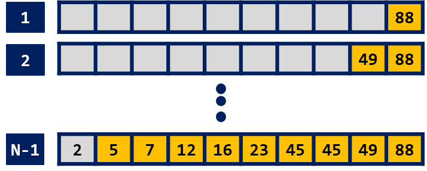
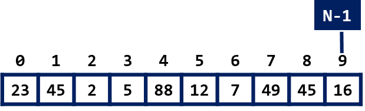
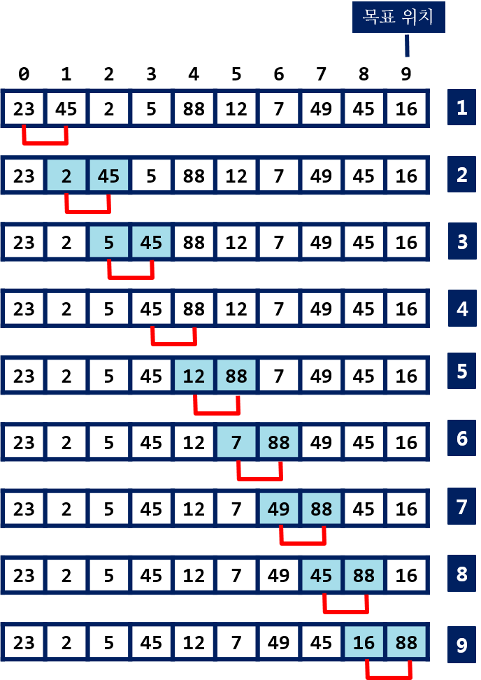
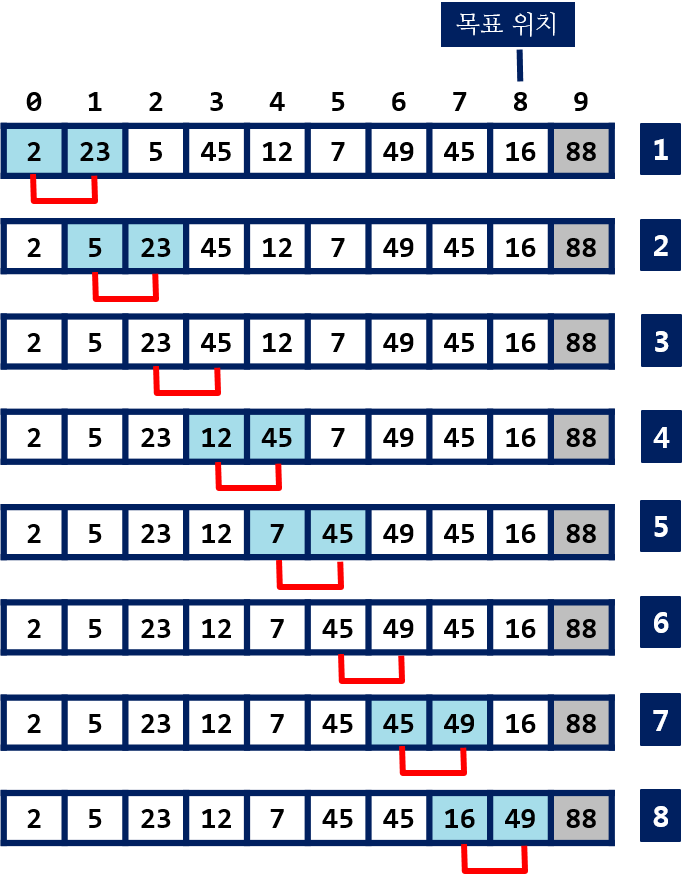

거품 정렬
거품 정렬¶
시간 복잡도
- 최선 O(n^2)
- 최악 O(n^2)
- 평균 O(n^2)
수중의 거품이 수면위로 올라가는 것과 같은 모습이라 거품 정렬이라고 한다. 인접한(연속한) 두 자료의 비교와 교환을 통해 정렬을 수행한다.
정렬할 자료 중에 최대값이나 최소값을 시작위치 또는 마지막 위치로 이동시킨다. 오름차순 정렬을 한다면 최대값이 마지막 위치에 자리를 잡게 된다.

<정렬(오름차순)되는 과정>
자료가 0번 인덱스에서 n-1까지 저장되어 있다.

<정렬전의 자료들>
연속된 두 자료를 비교한다. 첫번째 자료 위치가 i 이고, 두번째 자료는 i+1 이다.
- arr[i] > arr[i+1] 이면, 두 자료를 교환한다. i+1의 위치에 두 자료중에 큰 값이 위치한다.
- i를 1씩 증가시키면서 반복한다.
- 마지막 자료의 인덱스가 N - 1이므로 N-2와 N-1번 자료에 대한 비교/교환을 할 때까지 진행한다.
- 이 과정이 끝나면 최대값이 N-1번에 위치한다.
N-1번에 위치한 값은 최대값이고, 정렬된 상태에서 자신이 위치를 찾은 것이다.

<첫번째 pass: 88이 마지막(N-1)에 위치함>
이제, 정렬할 자료 수가 하나 줄었고, 0 부터 N-2 번의 자료들에 대해 동일한 작업을 반복 수행한다.
다음 그림은 두 번째로 큰 값이 N-2 번에 위치하는 과정을 보인다.

<두번째 pass: 49가 인덱스 N-2 에 위치함>
계속해서 N-3 부터 1 번 위치 까지 크기순으로 값을 결정하는 것을 반복하면 정렬이 끝난다.
예제 코드¶
Bubble Sort
def bubble_sort(arr):
for j in range(len(arr), 0, -1):
for i in range(1, j):
if arr[i - 1] > arr[i]:
arr[i - 1], arr[i] = arr[i], arr[i - 1]
void bubbleSort(int arr[], int size) // size: 자료의 수
{
for (int i = size - 2; i >= 0; i--) // n - 1 번 반복
{
for (int j = 0; j <= i; j++) // 인접한 두 요소 j, j + 1
{
if (arr[j] > arr[j + 1]) // 오름 차순 정렬
swap(arr[j], arr[j + 1]);
}
}
}